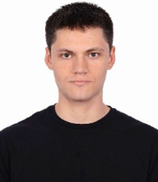

AI agent & client
Coordinates tool calls, follows the assessment and remediation workflow, and saves reports locally for review.
An autonomous penetration testing and remediation agent that connects AI to security tools through the Model Context Protocol.
Explore the project ↓Meet the teamFinding a vulnerability is only part of the job. Our project explores how an AI agent can coordinate discovery, apply an approved fix, and check the outcome within one controlled workflow.
We built an MCP server that exposes security tools to the agent and an intentionally vulnerable Flask application for repeatable testing. The prototype focuses on three predefined scenarios, with bounded autonomy and target-specific remediation.
Academic capstone · Advisor: Professor Sharon Perry
Coordinates tool calls, follows the assessment and remediation workflow, and saves reports locally for review.
Connects the agent to scanning, targeted validation, and approved remediation tools through a consistent interface.
A Flask application with mock account data, a SQLite database, and a login endpoint runs in a Docker container on a private internal network.
The target's web port is not published to the host. Security tools reach it through the internal network.
The prototype demonstrates scanning, approved remediation, and verification while checking that the application continues to function.
| Finding | Remediation | Verification |
|---|---|---|
| Exposed backup file | Remove the exposed file | Request returns HTTP 404 |
| SQL injection | Use parameterized SQL queries | Login bypass fails; valid login still works |
| Outdated Werkzeug dependency | Switch to the approved updated environment | Confirm the installed version |
Next steps include broader vulnerability coverage, additional reliability testing, and evaluation on a real application in an authorized environment.
